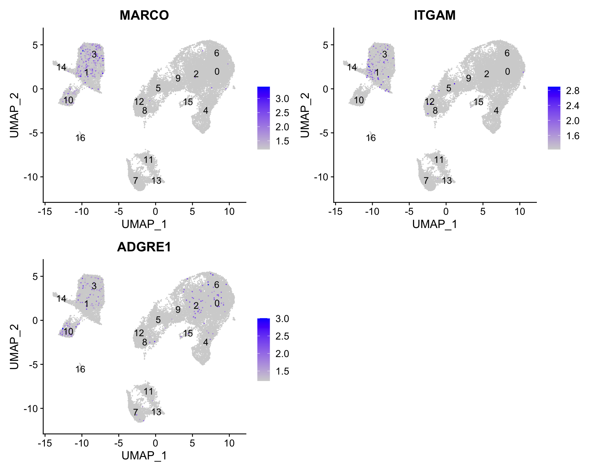

Determine the quality of clustering with PCA and UMAP plots, and decide when to re-cluster
Assess known cell type markers to hypothesize cell type identities of clusters
After separating cells into clusters, it is crtical to evaluate whether they are biologically meaningful or not. At this point we can also decide if we need to re-cluster and/or potentialy go back to a previous QC step.
In this lesson you will:
Check to see that clusters are not influenced by uninteresting sources of variation
Check to see whether the major principal components are driving the different clusters
Explore the cell type identities by looking at the expression for known markers across the clusters.
26.1 Exploration of quality control metrics
To determine whether our clusters might be due to artifacts such as cell cycle phase or mitochondrial expression, it can be useful to explore these metrics visually to see if any clusters exhibit enrichment or are different from the other clusters. However, if enrichment or differences are observed for particular clusters it may not be worrisome if it can be explained by the cell type.
To explore and visualize the various quality metrics, we will use the versatile DimPlot() and FeaturePlot() functions from Seurat.
An object of class Seurat
31130 features across 29629 samples within 3 assays
Active assay: integrated (3000 features, 3000 variable features)
2 layers present: data, scale.data
2 other assays present: RNA, SCT
2 dimensional reductions calculated: pca, umap
# UMAP of cells in each cluster by sampleDimPlot(seurat_clustered, label =TRUE, split.by ="sample")+NoLegend()
从UMAP图上可以直观的发现不同样本（ctrl vs. stim）的细胞分群非常一致，这是符合预期的。
接下来通过提取不同样本类型中各cluster的细胞数来以数据的形式验证这种一致性。下面是实现方法：
通过Seurat包的FetchData()函数可以从Seurat对象中提取指定的变量并形成行为细胞列为变量的数据框。这里通过关键词“ident”提取“active.ident”（即每个细胞所在的cluster的编号）；并提取”orig.ident”变量，即每个细胞对应的样本类型（ctrl vs. stim）（也可以提取“sample”）
从该表中可以看出，不同样本类型下的各细胞群的细胞数量基本一致。These clusters look pretty similar between conditions, which is good since we expected similar cell types to be present in both control and stimulated conditions.
Caution
Generally, we expect to see the majority of the cell type clusters to be present in all conditions; however, depending on the experiment we might expect to see some condition-specific cell types present.
26.4 分析细胞周期是否影响细胞分群
Next, we can explore whether the cells cluster influenced by the different cell cycle phases. We did not regress out variation due to cell cycle phase when we performed the SCTransform normalization ( sec-evaluating_effects_of_cell_cycle ). If our cell clusters showed large differences in cell cycle expression, this would be an indication we would want to re-run the SCTransform and add the S.Score and G2M.Score to our variables to regress, then re-run the rest of the steps.
We do not see much clustering by cell cycle score, so we can proceed with the QC.
26.5 分析其他非期望变异来源是否会影响细胞分群
Next we will explore additional metrics, such as the number of UMIs and genes per cell, S-phase and G2M-phase markers, and mitochondrial gene expression by UMAP. Looking at the individual S and G2M scores can give us additional information to checking the phase as we did previously.
Tip
The order argument will plot the positive cells above the negative cells, while the min.cutoff argument will determine the threshold for shading. A min.cutoff of q10 translates to the 10% of cells with the lowest expression of the gene will not exhibit any purple shading (completely gray) (min.cutoff定义着色阈值。这里指定值最低的10%的细胞不着色).
# Determine metrics to plot present in seurat_clustered@meta.datametrics<-c("nUMI", "nGene", "S.Score", "G2M.Score", "mitoRatio")FeaturePlot(seurat_clustered, reduction ="umap", features =metrics, pt.size =0.4, order =TRUE, min.cutoff ='q10', label =TRUE)
The metrics seem to be relatively even across the clusters, with the exception of nGene exhibiting slightly higher values in clusters to the left of the plot. We can keep an eye on these clusters to see whether the cell types may explain the increase.
If we see differences corresponding to any of these metrics at this point in time, then we will often note them and then decide after identifying the cell type identities whether to take any further action.
26.6 分析主成分（PCs）对细胞分群的影响
We can also explore how well our clusters separate by the different PCs; we hope that the defined PCs separate the cell types well. To visualize this information, we need to extract the UMAP coordinate information for the cells along with their corresponding scores for each of the PCs to view by UMAP.
First, we identify the information we would like to extract from the Seurat object, then, we can use the FetchData() function to extract it.
# Defining the information in the seurat object of interestcolumns<-c("ident", paste0("PC_", 1:16), "UMAP_1", "UMAP_2")# Extracting this data from the seurat objectpc_data<-FetchData(seurat_clustered, vars =columns)head(pc_data, 3)
How did we know in the FetchData() function to include UMAP_1 to obtain the UMAP coordinates? sec-seurat_command_list describes the function as being able to pull any data from the expression matrices, cell embeddings, or metadata.
For instance, if you explore the seurat_clustered@reductions list object, the first component is for PCA, and includes a slot for cell.embeddings (坐标数据). We can use the column names (PC_1, PC_2, PC_3, etc.) to pull out the coordinates or PC scores corresponding to each cell for each of the PCs (提取每个细胞在指定主成分上的坐标).
FetchData(seurat_clustered, vars =c("UMAP_1", "UMAP_2"))|>head(5)
The FetchData() function just allows us to extract the data more easily.
Caution
The pre-existing seurat_clustered loaded in previously was created using an older version of Seurat. As such the columns we Fetch() are in upper case (i.e UMAP_1). If you are using your own seurat object using a newer version of Seurat you will need to change the column names as shown below. Alternatively, explore your Seurat object to see how they have been stored.
# Defining the information in the seurat object of interestcolumns<-c("ident", paste0("PC_", 1:16), "umap_1", "umap_2")
In the UMAP plots below, the cells are colored by their PC score for each respective principal component.
Let’s take a quick look at the top 16 PCs:
# Adding cluster label to center of cluster on UMAPumap_label<-FetchData(seurat_clustered, vars =c("ident", "UMAP_1", "UMAP_2"))|>group_by(ident)|># 指定分组计算依据summarise(UMAP1_mean =mean(UMAP_1), UMAP2_mean =mean(UMAP_2))# 根据指定的分组依据进行分组计算head(umap_label)
We can see how the clusters are represented by the different PCs. For instance, the genes driving PC_2 exhibit higher expression in clusters 8 and 12. We could look back at our genes driving this PC to get an idea of what the cell types might be:
With the GNLY and NKG7 genes as positive markers of PC_2, we can hypothesize that clusters 8 and 12 correspond to NK cells (Table tbl-cell_type_markers). This just hints at what the clusters identity could be, with the identities of the clusters being determined through a combination of the PCs.
To truly determine the identity of the clusters and whether the resolution is appropriate, it is helpful to explore a handful of known gene markers for the cell types expected.
26.7 探索已知的cell type markers的表达
With the cells clustered, we can explore the cell type identities by looking for known markers. 下面给出了本案例的cell type markers及其对应的细胞类型：
Table 26.1: 细胞类型marker基因
Cell Type
Marker
CD14+ monocytes
CD14, LYZ
FCGR3A+ monocytes
FCGR3A, MS4A7
Conventional dendritic cells
FCER1A, CST3
Plasmacytoid dendritic cells
IL3RA, GZMB, SERPINF1, ITM2C
Macrophages
MARCO, ITGAM, ADGRE1
B cells
CD79A, MS4A1
T cells
CD3D
CD4+ T cells
CD3D, IL7R, CCR7
CD8+ T cells
CD3D, CD8A
NK cells
GNLY, NKG7
Megakaryocytes
PPBP
Erythrocytes
HBB, HBA2
The FeaturePlot() function from Seurat makes it easy to visualize a handful of genes using the gene IDs stored in the Seurat object. We can easily explore the expression of known gene markers on top of our UMAP visualizations. Let’s go through and determine the identities of the clusters.
Caution
The SCTransform normalization was performed only on the 3000 most variable genes, so many of our genes of interest may not be present in this data ( sec-perform_sctranform ).
# Select the RNA counts slot to be the default assayDefaultAssay(seurat_clustered)<-"RNA"# Normalize RNA data for visualization purposesseurat_clustered<-NormalizeData(seurat_clustered, verbose =FALSE)
Assay is a slot defined in the Seurat object, it has multiple slots within it. In a given assay, the counts slot stores non-normalized raw counts, and the data slot stores normalized expression data. Therefore, when we run the NormalizeData() function in the above code, the normalized data will be stored in the data slot of the RNA assay while the counts slot will remain unaltered.
Depending on our markers of interest, they could be positive or negative markers for a particular cell type. The combined expression of our chosen handful of markers should give us an idea on whether a cluster corresponds to that particular cell type.
For the markers used here, we are looking for positive markers and consistency of expression of the markers across the clusters. For example, if there are two markers for a cell type and only one of them is expressed in a cluster - then we cannot reliably assign that cluster to the cell type.
CD14+ monocyte markers
FeaturePlot(seurat_clustered, reduction ="umap", features =c("CD14", "LYZ"), order =TRUE, min.cutoff ='q10', label =TRUE)
CD14+ monocytes appear to correspond to clusters 1, and 3. We wouldn’t include clusters 14 and 10 because they do not highly express both of these markers.
FCGR3A+ monocyte markers
FeaturePlot(seurat_clustered, reduction ="umap", features =c("FCGR3A", "MS4A7"), order =TRUE, min.cutoff ='q10', label =TRUE)
FCGR3A+ monocytes markers distinctly highlight cluster 10, although we do see some decent expression in clusters 1 and 3. We would like to see additional markers for FCGR3A+ cells show up when we perform the marker identification.
Conventional dendritic cell markers
FeaturePlot(seurat_clustered, reduction ="umap", features =c("FCER1A", "CST3"), order =TRUE, min.cutoff ='q10', label =TRUE)
The markers corresponding to conventional dendritic cells identify cluster 14 (both markers consistently show expression).
Plasmacytoid dendritic cell markers
FeaturePlot(seurat_clustered, reduction ="umap", features =c("IL3RA", "GZMB", "SERPINF1", "ITM2C"), order =TRUE, min.cutoff ='q10', label =TRUE)
Plasmacytoid dendritic cells represent cluster 16. While there are a lot of differences in the expression of these markers, we see cluster 16 (though small) is consistently strongly expressed.
Macrophages
FeaturePlot(seurat_clustered, reduction ="umap", features =c("MARCO", "ITGAM", "ADGRE1"), order =TRUE, min.cutoff ='q10', label =TRUE)

We don’t see much overlap of our markers, so no clusters appear to correspond to macrophages; perhaps cell culture conditions negatively selected for macrophages (more highly adherent).
B cells
FeaturePlot(seurat_clustered, reduction ="umap", features =c("CD79A", "MS4A1"), order =TRUE, min.cutoff ='q10', label =TRUE)
可以看出，cluster 11, 7, 13属于B细胞。
T cells
FeaturePlot(seurat_clustered, reduction ="umap", features =c("CD3D"), order =TRUE, min.cutoff ='q10', label =TRUE)
FeaturePlot(seurat_clustered, reduction ="umap", features =c("PPBP"), order =TRUE, min.cutoff ='q10', label =TRUE)
cluster 15属于巨核细胞。
Erythrocytes（红细胞）
FeaturePlot(seurat_clustered, reduction ="umap", features =c("HBB", "HBA2"), order =TRUE, min.cutoff ='q10', label =TRUE)
可以看到，红细胞的marker gene基本没有明显的表达。
26.8细胞类型初步鉴定结果
根据上面的marker表达情况，我们大致可以确定如下细胞类型鉴定结果:
Cell Type
Clusters
CD14+ monocytes
1, 3
FCGR3A+ monocytes
10
Conventional dendritic cells
14
Plasmacytoid dendritic cells
16
Marcrophages
-
B cells
11, 7, 13
T cells
0, 2, 6, 4, 5, 9
CD4+ T cells
4, 0, 6, 2
CD8+ T cells
5, 9
NK cells
8, 12
Megakaryocytes
15
Erythrocytes
-
Unknown
-
Important
If any cluster appears to contain two separate cell types, it’s helpful to increase our clustering resolution to properly subset the clusters. Alternatively, if we still can’t separate out the clusters using increased resolution, then it’s possible that we had used too few principal components such that we are just not separating out these cell types of interest. To inform our choice of PCs, we could look at our PC gene expression overlapping the UMAP plots and determine whether our cell populations are separating by the PCs included.
Now we have a decent idea as to the cell types corresponding to the majority of the clusters, but some questions remain:
T cell markers appear to be highly expressed in many clusters. How can we differentiate and subset the larger group into smaller subset of cells?
Do the clusters corresponding to the same cell types have biologically meaningful differences? Are there subpopulations of these cell types?
Can we acquire higher confidence in these cell type identities by identifying other marker genes for these clusters?
Marker identification analysis can help us address all of these questions!!
The next step will be to perform marker identification analysis, which will output the genes that significantly differ in expression between clusters. Using these genes we can determine or improve confidence in the identities of the clusters/subclusters.
# 细胞分群质量评估 {#sec-cluster_qc}::: callout-note###### Learning Objectives:- Evaluate whether clustering artifacts are present- Determine the quality of clustering with PCA and UMAP plots, and decide when to re-cluster- Assess known cell type markers to hypothesize cell type identities of clusters:::{width="545"}After separating cells into clusters, it is crtical to evaluate whether they are **biologically meaningful** or not. At this point we can also decide **if we need to re-cluster and/or potentialy go back to a previous QC step**.\In this lesson you will:- Check to see that clusters are not influenced by uninteresting sources of variation- Check to see whether the major principal components are driving the different clusters- Explore the cell type identities by looking at the expression for known markers across the clusters.## Exploration of quality control metricsTo determine whether our clusters might be due to artifacts such as cell cycle phase or mitochondrial expression, it can be useful to explore these metrics visually to see if any clusters exhibit enrichment or are different from the other clusters. However, if enrichment or differences are observed for particular clusters it may not be worrisome if it can be explained by the cell type.To explore and visualize the various quality metrics, we will use the versatile `DimPlot()` and `FeaturePlot()` functions from Seurat.## 数据读取载入上一节中完成细胞分群的数据`seurat_clustered`。```{r}#| cache-lazy: falselibrary(Seurat)seurat_clustered <-readRDS("output/scRNA-seq_online/seurat_clustered.rds")seurat_clusteredhead(seurat_clustered, 5)```## 分析样本类型是否影响细胞分群首先通过UMAP图，直观查看不同样本类型的细胞分群情况：```{r}# 先简单查看一下分群情况及不同cluster的细胞数table(seurat_clustered@active.ident)# UMAP of cells in each cluster by sampleDimPlot(seurat_clustered, label =TRUE, split.by ="sample") +NoLegend()```> 从UMAP图上可以直观的发现不同样本（ctrl vs. stim）的细胞分群非常一致，这是符合预期的。接下来通过提取不同样本类型中各cluster的细胞数来以数据的形式验证这种一致性。下面是实现方法：1. 通过`Seurat`包的`FetchData()`函数可以从Seurat对象中提取指定的变量并形成行为细胞列为变量的数据框。这里通过关键词“ident”提取“active.ident”（即每个细胞所在的cluster的编号）；并提取"orig.ident"变量，即每个细胞对应的样本类型（ctrl vs. stim）（也可以提取“sample”）{width="313"}2. 然后通过`dplyr`包的`count()`函数统计每个样本类型内每个cluster的细胞数量{width="278"}3. 最后，通过`tidyr`包的`pivot_wider()`函数将长数据转换成宽数据。其中的`names_from`参数用于指定原数据中要拆分的那一列的名字（会在转换后的数据中变成列名）；`values_from`参数用于指定新数据集中单元格的值由旧数据的哪个（或哪些）变量的值填充```{r}library(dplyr)library(tidyr)n_cells <-FetchData(seurat_clustered, vars =c("ident", "orig.ident")) |>count(ident, orig.ident) |>pivot_wider(names_from = ident,values_from = n)n_cells```> 从该表中可以看出，不同样本类型下的各细胞群的细胞数量基本一致。These clusters look pretty similar between conditions, which is good since we expected similar cell types to be present in both control and stimulated conditions.::: callout-cautionGenerally, we expect to see the majority of the cell type clusters to be present in all conditions; however, depending on the experiment we might expect to see some **condition-specific cell types** present.:::## 分析细胞周期是否影响细胞分群Next, we can explore whether the **cells cluster influenced by the different cell cycle phases**. We did not regress out variation due to cell cycle phase when we performed the `SCTransform` normalization ( @sec-evaluating_effects_of_cell_cycle ). **If our cell clusters showed large differences in cell cycle expression, this would be an indication we would want to re-run the `SCTransform` and add the `S.Score` and `G2M.Score` to our variables to regress, then re-run the rest of the steps.**```{r}#| fig-width: 10# Explore whether clusters segregate by cell cycle phaseDimPlot(seurat_clustered,label =TRUE, split.by ="Phase") +NoLegend()```> We do not see much clustering by cell cycle score, so we can proceed with the QC.## 分析其他非期望变异来源是否会影响细胞分群Next we will explore additional metrics, such as the **number of UMIs** and **genes per cell**, **S-phase and G2M-phase markers**, and **mitochondrial gene expression** by UMAP. Looking at the individual S and G2M scores can give us additional information to checking the phase as we did previously.::: callout-tipThe `order` argument will plot the positive cells above the negative cells, while the `min.cutoff` argument will determine the threshold for shading. A `min.cutoff` of `q10` translates to the 10% of cells with the lowest expression of the gene will not exhibit any purple shading (completely gray) (`min.cutoff`定义着色阈值。这里指定值最低的10%的细胞不着色).:::```{r}#| fig-width: 10#| fig-height: 8# Determine metrics to plot present in seurat_clustered@meta.datametrics <-c("nUMI", "nGene", "S.Score", "G2M.Score", "mitoRatio")FeaturePlot(seurat_clustered, reduction ="umap", features = metrics,pt.size =0.4, order =TRUE,min.cutoff ='q10', label =TRUE)```> The metrics seem to be relatively even across the clusters, with the exception of `nGene` exhibiting slightly higher values in clusters to the left of the plot. We can keep an eye on these clusters to see whether the cell types may explain the increase.>> If we see differences corresponding to any of these metrics at this point in time, then we will often note them and then decide after identifying the cell type identities whether to take any further action.## 分析主成分（PCs）对细胞分群的影响 {#sec-Effect_of_pcs_clustering}We can also explore how well our clusters separate by the different PCs; **we hope that the defined PCs separate the cell types well**. To visualize this information, we need to extract the UMAP coordinate information for the cells along with their corresponding scores for each of the PCs to view by UMAP.First, we identify the information we would like to extract from the Seurat object, then, we can use the `FetchData()` function to extract it.```{r}# Defining the information in the seurat object of interestcolumns <-c("ident", paste0("PC_", 1:16), "UMAP_1", "UMAP_2")# Extracting this data from the seurat objectpc_data <-FetchData(seurat_clustered, vars = columns)head(pc_data, 3)```::: callout-tipHow did we know in the `FetchData()` function to include `UMAP_1` to obtain the UMAP coordinates? @sec-seurat_command_list describes the function as being able to pull any data from the expression matrices, cell embeddings, or metadata.For instance, if you explore the `seurat_clustered@reductions` list object, the first component is for PCA, and includes a slot for `cell.embeddings` (坐标数据). We can use the column names (`PC_1`, `PC_2`, `PC_3`, etc.) to pull out the coordinates or PC scores corresponding to each cell for each of the PCs (提取每个细胞在指定主成分上的坐标).We could do the same thing for UMAP:```{r}# 提取前5个细胞在前两个UMAP主成分上的坐标seurat_clustered@reductions[["umap"]]@cell.embeddings[1:5, 1:2]```等价于：```{r}#| eval: falseFetchData(seurat_clustered, vars =c("UMAP_1", "UMAP_2")) |>head(5)```The `FetchData()` function just allows us to extract the data more easily.:::::: callout-cautionThe pre-existing `seurat_clustered` loaded in previously was created using an older version of Seurat. As such the columns we `Fetch()` are in upper case (i.e `UMAP_1`). **If you are using your own seurat object using a newer version of Seurat you will need to change the column names as shown below.** Alternatively, explore your Seurat object to see how they have been stored.```{r}# Defining the information in the seurat object of interest columns <-c("ident", paste0("PC_", 1:16), "umap_1", "umap_2")```:::In the UMAP plots below, the cells are colored by their PC score for each respective principal component.Let's take a quick look at the top 16 PCs:```{r}#| fig-width: 20#| fig-height: 15# Adding cluster label to center of cluster on UMAPumap_label <-FetchData(seurat_clustered, vars =c("ident", "UMAP_1", "UMAP_2")) |>group_by(ident) |># 指定分组计算依据summarise(UMAP1_mean =mean(UMAP_1), UMAP2_mean =mean(UMAP_2)) # 根据指定的分组依据进行分组计算head(umap_label)# Plotting a UMAP plot for each of the PCslibrary(purrr)library(ggplot2)library(cowplot)library(dplyr)map(paste0("PC_", 1:16), function(pc) {ggplot(pc_data, aes(UMAP_1, UMAP_2)) +geom_point(aes_string(color = pc), alpha =0.7) +scale_color_gradient(low ="grey90", high ="blue") +geom_text(data = umap_label, aes(label = ident, UMAP1_mean, UMAP2_mean)) +ggtitle(pc) }) %>%plot_grid(plotlist = .)```We can see how the clusters are represented by the different PCs. For instance, the genes driving `PC_2` exhibit higher expression in **clusters 8 and 12**. We could look back at our genes driving this PC to get an idea of what the cell types might be:```{r}# 提取PCA信息中的第二主成分，并展示对该主成分影响最大的前5个基因名print(seurat_clustered[["pca"]], dims =2, nfeatures =5)```With the **GNLY** and **NKG7** genes as positive markers of `PC_2`, **we can hypothesize that clusters 8 and 12 correspond to NK cells (** @tbl-cell_type_markers **)**. This just hints at what the clusters identity could be, with the identities of the clusters being determined through a combination of the PCs.To truly determine the identity of the clusters and whether the `resolution` is appropriate, it is helpful to explore a handful of known gene markers for the cell types expected.## 探索已知的cell type markers的表达 {#sec-explore_known_markers}With the cells clustered, we can explore the cell type identities by looking for known markers. 下面给出了本案例的cell type markers及其对应的细胞类型：| Cell Type | Marker ||:----------------------------:|:----------------------------:|| CD14+ monocytes | CD14, LYZ || FCGR3A+ monocytes | FCGR3A, MS4A7 || Conventional dendritic cells | FCER1A, CST3 || Plasmacytoid dendritic cells | IL3RA, GZMB, SERPINF1, ITM2C || Macrophages | MARCO, ITGAM, ADGRE1 || B cells | CD79A, MS4A1 || T cells | CD3D || CD4+ T cells | CD3D, IL7R, CCR7 || CD8+ T cells | CD3D, CD8A || NK cells | GNLY, NKG7 || Megakaryocytes | PPBP || Erythrocytes | HBB, HBA2 |: 细胞类型marker基因 {#tbl-cell_type_markers}The `FeaturePlot()` function from Seurat makes it easy to visualize a handful of genes using the gene IDs stored in the Seurat object. We can easily explore the expression of known gene markers on top of our UMAP visualizations. Let's go through and determine the identities of the clusters.::: callout-cautionThe `SCTransform` normalization was performed only on the **3000** most variable genes, so many of our genes of interest may not be present in this data ( @sec-perform_sctranform ).:::::: callout-warning在[原教程](https://hbctraining.github.io/scRNA-seq_online/lessons/08_SC_clustering_quality_control.html)中，由于采用了Seurat V5之前的工作流（如 @sec-Load_case_data 所述），所以为了准确可视化marker基因的表达情况，将默认的assay改回了“RNA”，然后运行`NormalizeData`：```{r}#| cache-lazy: falseDefaultAssay(seurat_clustered) # Select the RNA counts slot to be the default assayDefaultAssay(seurat_clustered) <-"RNA"# Normalize RNA data for visualization purposesseurat_clustered <-NormalizeData(seurat_clustered, verbose =FALSE)```*Assay is a slot defined in the Seurat object, it has multiple slots within it. In a given assay, the `counts` slot stores non-normalized raw counts, and the `data` slot stores normalized expression data. Therefore, when we run the `NormalizeData()` function in the above code, the normalized data will be stored in the `data` slot of the RNA assay while the `counts` slot will remain unaltered.*而在Seurat V5的官方教程中（ @sec-sctransform ），经过了`SCTransform`之后绘制marker基因的表达情况时，并没有执行这一步，默认的assay仍然是“SCT”。这里为了和原教程的图像一致，所以也进行这一步。而对于以后的Seurat V5工作流考虑按照官方教程的做法。:::Depending on our markers of interest, they could be positive or negative markers for a particular cell type. The combined expression of our chosen handful of markers should give us an idea on whether a cluster corresponds to that particular cell type.For the markers used here, we are looking for positive markers and consistency of expression of the markers across the clusters. For example, if there are two markers for a cell type and only one of them is expressed in a cluster - then we cannot reliably assign that cluster to the cell type.### CD14+ monocyte markers```{r}#| fig-width: 10FeaturePlot(seurat_clustered, reduction ="umap", features =c("CD14", "LYZ"), order =TRUE,min.cutoff ='q10', label =TRUE)```CD14+ monocytes appear to correspond to **clusters 1, and 3**. We wouldn't include clusters 14 and 10 because they do not highly express both of these markers.### FCGR3A+ monocyte markers {#sec-fcgr3a_monocyte_markers}```{r}#| fig-width: 10FeaturePlot(seurat_clustered, reduction ="umap", features =c("FCGR3A", "MS4A7"), order =TRUE,min.cutoff ='q10', label =TRUE)```FCGR3A+ monocytes markers distinctly highlight **cluster 10**, although we do see some decent expression in clusters 1 and 3. We would like to see additional markers for FCGR3A+ cells show up when we perform the marker identification.### Conventional dendritic cell markers```{r}#| fig-width: 10FeaturePlot(seurat_clustered, reduction ="umap", features =c("FCER1A", "CST3"), order =TRUE,min.cutoff ='q10', label =TRUE)```The markers corresponding to conventional dendritic cells identify **cluster 14** (both markers consistently show expression).### Plasmacytoid dendritic cell markers```{r}#| fig-width: 10#| fig-height: 8FeaturePlot(seurat_clustered, reduction ="umap", features =c("IL3RA", "GZMB", "SERPINF1", "ITM2C"), order =TRUE,min.cutoff ='q10', label =TRUE)```Plasmacytoid dendritic cells represent **cluster 16**. While there are a lot of differences in the expression of these markers, we see cluster 16 (though small) is consistently strongly expressed.### Macrophages```{r}#| fig-width: 10#| fig-height: 8FeaturePlot(seurat_clustered, reduction ="umap", features =c("MARCO", "ITGAM", "ADGRE1"), order =TRUE,min.cutoff ='q10', label =TRUE)```We don't see much overlap of our markers, so no clusters appear to correspond to macrophages; perhaps cell culture conditions negatively selected for macrophages (more highly adherent).### B cells```{r}#| fig-width: 10FeaturePlot(seurat_clustered, reduction ="umap", features =c("CD79A", "MS4A1"), order =TRUE,min.cutoff ='q10', label =TRUE)```可以看出，cluster 11, 7, 13属于B细胞。### T cells```{r}FeaturePlot(seurat_clustered, reduction ="umap", features =c("CD3D"), order =TRUE,min.cutoff ='q10', label =TRUE)```T细胞的标志物在大量的cluster中均表达，包括cluster 0, 2, 6, 4, 5, 9。### CD4+ T cells {#sec-cd4_t_cells}```{r}#| fig-width: 10#| fig-height: 8FeaturePlot(seurat_clustered, reduction ="umap", features =c("CD3D", "IL7R", "CCR7"), order =TRUE,min.cutoff ='q10', label =TRUE)```大致看出cluster 4, 0, 6, 2属于CD4+ T 细胞。### CD8+ T cells```{r}#| fig-width: 10FeaturePlot(seurat_clustered, reduction ="umap", features =c("CD3D", "CD8A"), order =TRUE,min.cutoff ='q10', label =TRUE)```cluster 5和 cluster 9属于CD8+ T细胞。### NK cells```{r}#| fig-width: 10FeaturePlot(seurat_clustered, reduction ="umap", features =c("GNLY", "NKG7"), order =TRUE,min.cutoff ='q10', label =TRUE)```cluster 8, 12属于NK细胞。这和我们在前面的 @sec-Effect_of_pcs_clustering 中的结论（第二主成分的top基因GNLY和NKG7在cluster 8和cluster 12中高表达）一致。### Megakaryocytes（巨核细胞）```{r}FeaturePlot(seurat_clustered, reduction ="umap", features =c("PPBP"), order =TRUE,min.cutoff ='q10', label =TRUE)```cluster 15属于巨核细胞。### Erythrocytes（红细胞）```{r}#| fig-width: 10FeaturePlot(seurat_clustered, reduction ="umap", features =c("HBB", "HBA2"), order =TRUE,min.cutoff ='q10', label =TRUE)```可以看到，红细胞的marker gene基本没有明显的表达。------------------------------------------------------------------------## **细胞类型初步鉴定结果** {#sec-Preliminary_cell_type_identification_results}根据上面的marker表达情况，我们大致可以确定如下细胞类型鉴定结果:| Cell Type | Clusters ||:----------------------------:|:----------------:|| CD14+ monocytes | 1, 3 || FCGR3A+ monocytes | 10 || Conventional dendritic cells | 14 || Plasmacytoid dendritic cells | 16 || Marcrophages | \- || B cells | 11, 7, 13 || T cells | 0, 2, 6, 4, 5, 9 || CD4+ T cells | 4, 0, 6, 2 || CD8+ T cells | 5, 9 || NK cells | 8, 12 || Megakaryocytes | 15 || Erythrocytes | \- || Unknown | \- |------------------------------------------------------------------------::: callout-importantIf any cluster appears to contain two separate cell types, it's helpful to i**ncrease our clustering resolution** to properly subset the clusters. Alternatively, if we still can't separate out the clusters using increased resolution, then it's possible that we had used **too few principal components** such that we are just not separating out these cell types of interest. To inform our choice of PCs, we could look at our PC gene expression overlapping the UMAP plots and determine whether our cell populations are separating by the PCs included.:::Now we have a decent idea as to the cell types corresponding to the majority of the clusters, but some questions remain:1. *T cell markers appear to be highly expressed in many clusters. How can we differentiate and subset the larger group into smaller subset of cells?*2. *Do the clusters corresponding to the same cell types have biologically meaningful differences? Are there subpopulations of these cell types?*3. *Can we acquire higher confidence in these cell type identities by identifying other marker genes for these clusters?*Marker identification analysis can help us address all of these questions!!The next step will be to perform marker identification analysis, which will output the genes that significantly differ in expression between clusters. Using these genes we can determine or improve confidence in the identities of the clusters/subclusters.## 保存数据```{r}saveRDS(seurat_clustered, file ="output/scRNA-seq_online/seurat_clustered_qc.rds")```------------------------------------------------------------------------::: {.callout-note collapse="true" icon="false"}## Session Info```{r}#| echo: falsesessionInfo()```:::